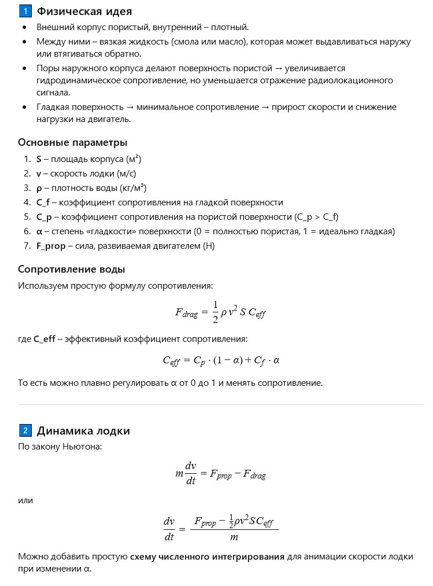
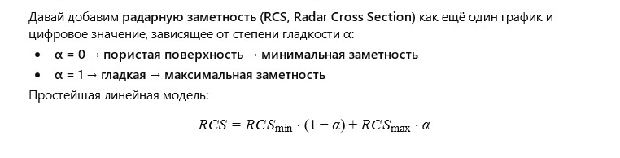

← Вернуться к оглавлению


Подводная лодка: скорость, заметность и внешний вид
Степень гладкости (α):
0.05
Сила двигателя (F_prop, Н):
5000
Сопротивление воды (Н):
0
Скорость лодки (м/с):
0
Радарная заметность (RCS, м²):
0
Старт
← Вернуться к оглавлению